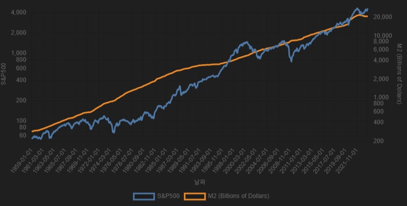
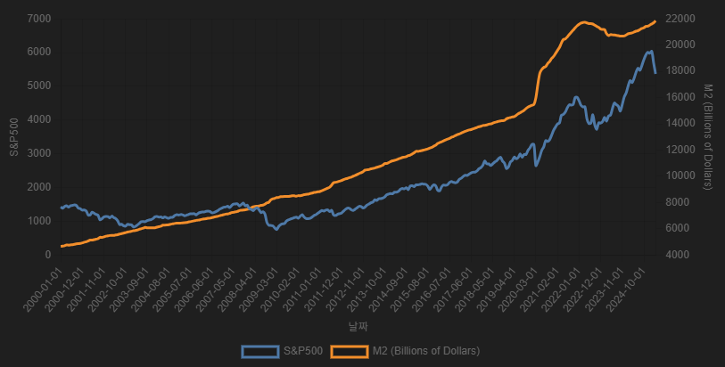
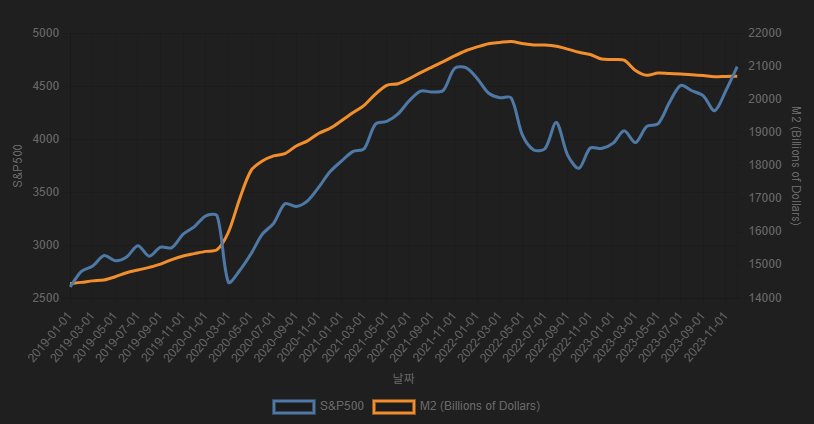

미국의 주식시장은 과연 얼마나 ‘돈의 흐름’에 영향을 받을까?
연방준비제도가 찍어낸 달러, 즉 M2 통화량의 증가는 단순한 숫자 이상의 의미를 가집니다.
만약 유동성의 증가가 자산 가격 상승의 연료 역할을 한다면,
수십 년에 걸친 S&P500 지수의 움직임 속에서도 그 흔적을 찾을 수 있지 않을까요?
이에 따라 본 리포트는 미국의 대표 주가지수인 S&P500과 연방준비제도가 집계하는 M2 통화량 간의 관계를 분석합니다.
유동성 공급이 자산시장에 미치는 영향을 장기 및 단기 시계열로 시각화하여, 통화량 증가가 주가에 어떤 구조적 영향을 미쳤는지를 탐색합니다.
아래 차트는 1959년부터 2025년까지의 S&P500 지수와 M2 통화량의 추이를 함께 나타냅니다. 로그 스케일을 사용함으로써 두 지표의 비율 성장을 보다 직관적으로 비교할 수 있습니다.
해당 기간 동안:
2000년 이후는 닷컴 버블, 금융위기, 팬데믹, 고금리기 등 다양한 거시 이벤트가 혼재된 시기로, 유동성과 주가 간의 관계가 더욱 복잡하게 나타납니다.
분석 결과:
2020년 팬데믹 이후는 유례없는 유동성 공급기였습니다. 연준은 급격한 경기 둔화를 막기 위해 양적완화를 시행했고, M2는 폭발적으로 증가했습니다.
팬데믹 시기의 분석은 단기 충격에 대한 정책 대응이 자산시장에 얼마나 빠르게 반영되는지를 보여주는 대표 사례입니다.
이러한 분석은 투자자들에게 유동성 지표(M2)를 거시적 투자 판단의 참고 지표로 삼을 수 있는 근거를 제공합니다. 다만, 단기적 대응에는 보다 복합적인 변수 고려가 필요함을 함께 시사합니다.